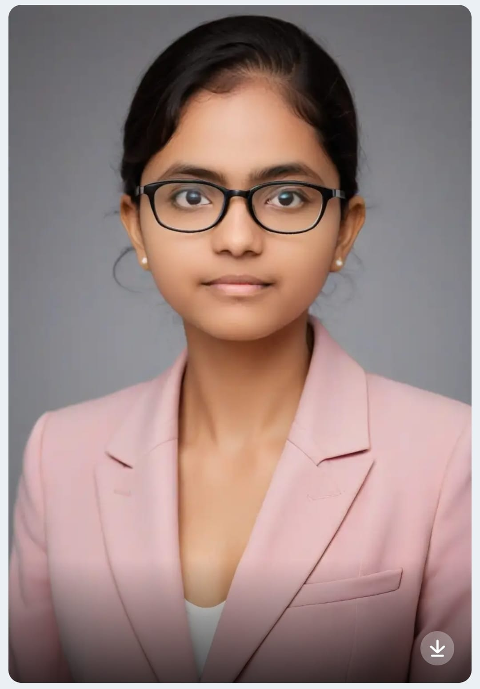

Hi There,

A passionate tech enthusiast driven by the desire to solve real-world challenges through innovative and efficient coding solutions. With a strong foundation in backend and frontend technologies, I enjoy designing and building systems that not only work but also add value to users and businesses. I believe in continuous learning and staying up-to-date with modern tools and practices to deliver high-quality software.
My goal is to build scalable, maintainable, and secure full-stack web applications that can grow with user demand. I’m passionate about writing clean, modular code and following best practices in both frontend and backend development. I aspire to contribute to impactful tech projects, collaborate with innovative teams, and continuously evolve as a developer by embracing new challenges and learning opportunities.
C++
Frontend:HTML,CSS
Database:MySql
A Plant Monitoring System tracks plant health using sensors.
Features:
tools:
A WhatsApp Clone is a real-time messaging app built to mimic key features of WhatsApp.
technologies
Pune, Maharashtra
Amravati,Maharashtra
Get hands-on experience by developing many projects like Bank Management System, WhatsApp Clone, etc. Learn about JDBC, Java Swing, OOPs concepts, and many more core & advanced Java technologies through practical implementation.
Name: Tejaswini Ekandwar
Email: tejaswiniekandwar1@gmail.com
Phone: +91 826-206-1613